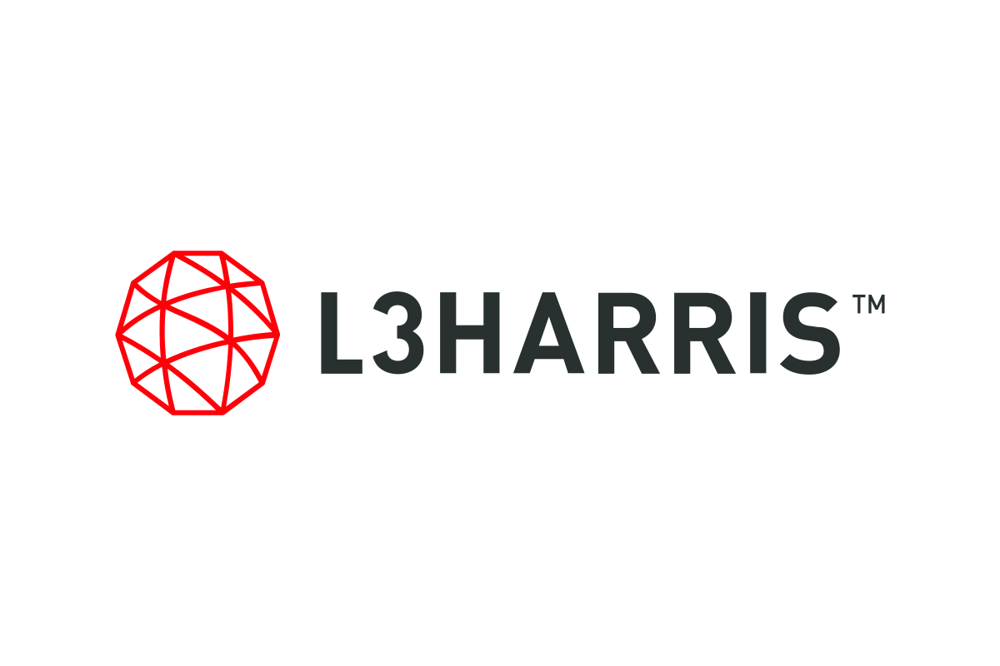
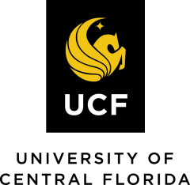

iCAT
Intelligent Computer Architecture
and Technology Laboratory
UCF has strong graduate programs in computer engineering. Per CSRankings, UCF stands at No. 15 in the U.S. in computer architecture and No. 5 in EDA; the computer engineering program ranked No. 50 in the 2023 U.S. News & World Report. Lab members have gone on to academia and industry — NUAA, Apple, AMD, and quantitative finance — within a short time of graduating.
For prospective students
Students at iCAT get a well-rounded grounding in computer systems and machine learning design: theory, modeling and simulation, performance evaluation, and physical implementation. You will collaborate with researchers across the country and work on industry-scale projects that turn our research into real products. Every student is supported for conference travel each year.
The lab culture is supportive and inclusive. We care about your growth, your health, and where you go next. The mentoring philosophy is simple: give you every resource you need to do work that matters, while making sure you actually enjoy the Ph.D. Every student is different, and your perspective counts.
Successful candidates are motivated, willing to learn new concepts, and want to work at the frontier of this field. We expect:
- ResearchSolid understanding or prior experience in one or more of: computer architecture, algorithms, machine learning applications, FPGA/HLS programming, or computer and mathematical modeling.
- ToolsProficient programming skills — C/C++, Python, Verilog, and scripting languages.
- ScopeOur projects cover the whole computing stack, from algorithm to silicon, so students with different backgrounds are all welcome.
Graduate research and teaching assistantships are available for prospective Ph.D. students. Send your CV and transcripts using the contact link.
Ph.D. students
-
Shilin Tian
Dean's Dissertation Fellowship · ORC Fellowship
-
Amir Ghazizadeh
-
Fangzhou Ye
ECE Best Graduate Researcher Award · FFL Fellowship · ORC Fellowship
Undergraduate researchers
-
Peyton Barnes
-
Eren Siegman
AMD Fellowship
Alumni
- Lingxiang Yin — Ph.D. 2024Associate Professor (with tenure), NUAA
- Jiaqi Yang — Ph.D., co-advisedAssociate Professor (with tenure), Shandong University
- Andres Graterol — M.S., Fall 2023 – Spring 2024UCF
- Chase Szafranski — B.S., Spring 2022 – Spring 2024AMD Fellowship · UCF
- Grace Tuomala — B.S., Fall 2023 – Spring 2024AMD Fellowship · UCF
- Mariam Rabadi — B.S., Spring 2022 – Fall 2023AMD Fellowship · UCF
- John Gierlach — B.S., Spring 2023AMD Fellowship · UCF
- Luis Infante — B.S., Fall 2024 – Spring 2025UCF
- Jessica Morris — B.S., Fall 2024 – Spring 2025UCF
- Aneesha Nayak — B.S., Fall 2024 – Spring 20252025 Order of Pegasus, the highest UCF student award
- Jaden Jeudy — B.S., Fall 2024 – Spring 2025UCF
- Briana Thakkar — B.S., Fall 2024 – Spring 2025UCF
- Jhon Tabio — B.S., Fall 2024 – Spring 2025UCF
- Sean Zarobsky — B.S., Fall 2024 – Spring 2025UCF
Research support
 National Science Foundation
National Science Foundation U.S. Department of Energy
U.S. Department of Energy DARPA
DARPA
L3Harris AriLinc
AriLinc
University of Central Florida